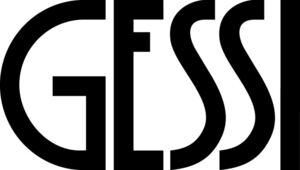

Trade Mark Journal No.2026/008 20 February 2026
WO0000001888346 (6,11,20,21)
Office of origin: Italy
Date of International Registration:7 August 2025
Date of designation in the UK:
7 August 2025

International priority date claimed: 27 February 2025
(European Union Intellectual Property Office (EUIPO))
(019148900)
- Class 6
- Common metals and their alloys; metal building materials; buildings, transportable, of metal; railway material of metal; non-electric cables and wires of common metal; ironmongery, small items of metal hardware; tubes of metal; safes [metal or non-metal]; ores of metal; fittings of metal for plumbing and heating installations; metal handles; handles of metal for showers; bathtub grab bars of metal; toilet paper dispensers, of metal; clevises of metal; metal door trim; window furniture of metal; pipe fittings [junctions] of metal; pipes, tubes and hoses, and fittings therefor, including valves, of metal; shower rods of metal; branching pipes, of metal; pipes and metal tubing for liquids; water-pipes of metal; ducts of metal, for central heating installations; manifolds of metal for pipelines; elbows of metal for pipes; fittings of metal for pipes; pipe sleeves of metal; valves of metal for plumbing and heating installations; water-main valves of metal; drain traps [valves] of metal; valves of metal, other than parts of machines; shutoff valves; non-return valves; brass, unwrought or semi-wrought; pivots of metal; door hinges of metal; nuts, bolts and fasteners, of metal; floor hinges of metal; hinges of metal incorporating a spring.
- Class 11
- Apparatus for lighting, heating, steam generating, cooking, refrigerating, drying, ventilating, water supply and sanitary purposes; lighting installations; lighting apparatus; display lighting; wall-mounted lighting apparatus; lighting devices for indoor and outdoor use; lamps and light bulbs; solar lamps; light bulbs, electric; floor lamps; germicidal lamps for purifying air; headlights and downlights; light diffusers; illuminated panels; designer lamps and lamps for architecture; air heating, air cooling, air ventilating, air conditioning and air purifying apparatus, their fittings and appliances; water heating, cooling of water and water purifying apparatus, their fittings and appliances; water purification, desalination and conditioning installations; water filtration apparatus, devices and installations; water filtering units; apparatus for filtering drinking water also for domestic use; electrically controlled water faucets; taps, cocks for pipes and accessories thereof; taps and fittings therefor; mixer taps [faucets]; thermostatic taps; showers; shower cubicles; shower roses; bath tubs; floor-standing washbasins; wash-hand basins [parts of sanitary installations]; basins being part of water supply installations; sinks; toilet seats; toilet bowls; bidets; flushing tanks; sanitary installations; sanitary apparatus and installations; sanitary ware; sanitary water fittings; bathroom installations for sanitary purposes; apparatus for the supply of water for sanitary purposes; saunas; turkish bath cabinets; steam baths, saunas and spas; bath cubicles; bath fittings; shower fittings; fittings for sanitary purposes; regulating and safety accessories for water and gas installations; terminal water supply fittings; water pressure reducers [regulating accessories]; coffee percolators, electric; coffee capsules, empty, for electric coffee machines; coffee machines incorporating water purifiers; coffee machines; coffee machines, electric; hand drying apparatus for washrooms; hair dryers; refrigerating apparatus and machines; ice machines and apparatus; beverage cooling apparatus; apparatus for dispensing chilled beverages; heating and cooling apparatus for dispensing hot and cold beverages; installations for heating beverages.
- Class 20
- Furniture; mirrors (silvered glass); picture frames; bathroom furniture; furniture for kitchens; furniture for house, office and garden; furniture for wellness centres and beauty centres; display cabinets; indoor furniture; outdoor furniture; furniture for shops; furniture for industrial use; furniture for saunas; composable furniture; furniture moldings; furniture supports; chairs and seats; clothes stands; clothes covers; cupboards; coatstands; coat hangers; coathooks, not of metal; containers, not of metal [storage, transport]; curtain rods; curtain rings; indoor blinds, and fittings for curtains and indoor blinds; chests for toys; cushions; beds; mattresses; umbrella stands; dowels, not of metal; seats; shelving units; high chairs for babies; dressing tables; massage tables; ergonomic chairs for seated massage; hinges, not of metal; strap-hinges, not of metal; floor hinges, not of metal; door fittings made of plastics; bathroom vanities [furniture]; door, gate and window fittings, non-metallic; door fittings, not of metal; non-metallic support grips; doorknobs, not of metal; door handles, not of metal; finger-plates, not of metal; toilet paper dispensers, not of metal; shower grab bars, not of metal; display stands; display stands for merchandise; shop display fittings, (non-metallic -); counter stands; metal display stands; display units for presentation purposes; point of purchase displays; display stands for shop windows; exhibition display stands [non-metallic]; displays, display stands and signboards, not of metal; pots of plastic for packaging; flower-pot pedestals; bins, not of metal; racks [furniture]; leather furniture; clothes hangers; toilet paper dispensers, not of metal; wall-mounted soap dispensing bottles.
- Class 21
- Household or kitchen utensils and containers; combs and sponges; brushes; cleaning articles; glass, unworked or semi-worked, except building glass; glassware, porcelain and earthenware not included in other classes; vases, chamber pots, kitchen urns [not of precious metal], pot lids; saucers for flower pots; flower pots; flower vases; floor vases; bathroom accessories, namely soap holders, soap dispensing bottles, liquid soap dispensing bottles, toilet paper holders, toilet brushes, wall-mounted toilet brushes, towel rails and rings, toothbrush holders, brushes for toilet purposes, brushes, bath sponges; clothes drying hangers; coffee percolators, non-electric; coffee services [tableware].
GESSI S.P.A.
Representative: PGA S.P.A., Via Mascheroni, 31, I-20145 MILANO, ITALY